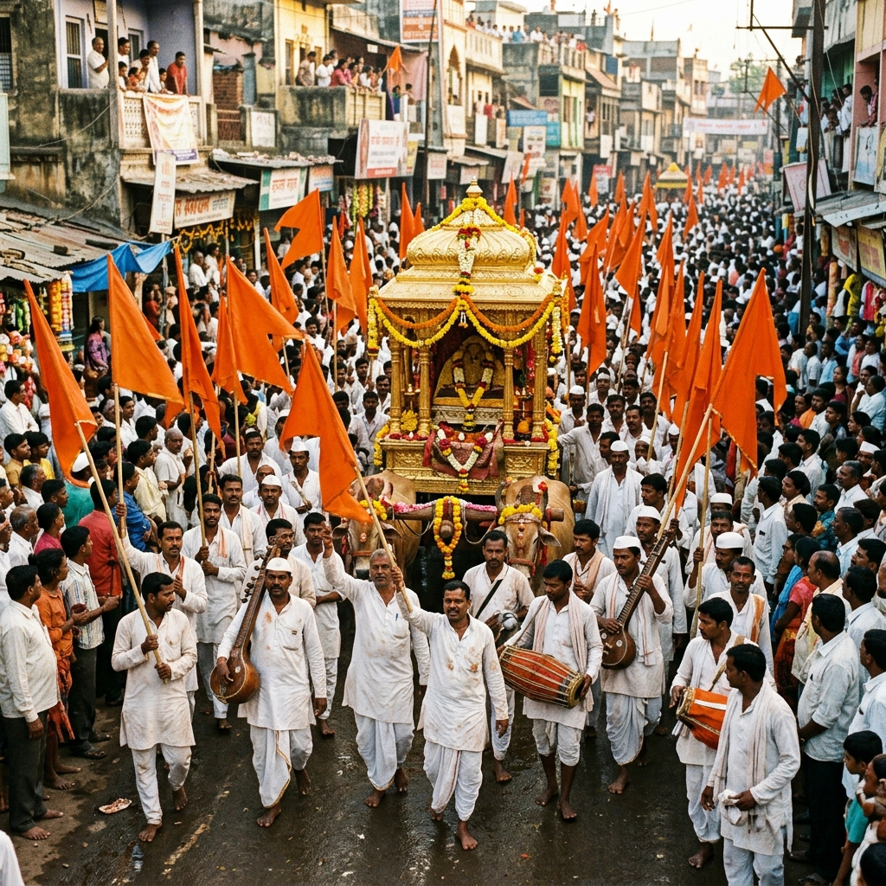

Track the Palkhi Journey in Real Time.
Stay connected with the sacred Wari journey. View the live location, route updates, estimated arrival times, and important announcements throughout the pilgrimage.

Connecting Millions Through the Sacred Wari
Experience the Wari like never before with live GPS tracking, route updates, halt locations, and estimated arrival times. Our platform helps devotees, volunteers, and visitors stay informed throughout the sacred journey.
Wari Management & Planning Review
The administration has adopted a comprehensive, technology-driven and citizen-centric approach for the Ashadhi Wari 2026, integrating 24x7 smart surveillance, AI-powered traffic management, advanced public safety systems and large-scale operational deployment to ensure a secure and seamless pilgrimage.
Wari 2026: Resource & Arrangements
Is this page active for the entire journey from Dehu and Alandi to Pandharpur?
This platform remains active throughout the entire pilgrimage to provide live coordinates and location-based assistance to devotees.
How many volunteers and coordinators are on-ground for the Wari arrangements?
Thousands of security guards, medical volunteers, and administration coordinators are deployed across the route to monitor crowd movement and resolve bottlenecks.
How are the current locations provided?
Locations are provided using dynamic GPS updates attached to the administrative vehicles accompanying the Palkhi chariots, backed by manual coordinate updates from officers stationed at route checkpoints.